Recepción de pedidos e inventario, sin internet
Asistente de Revisión es una herramienta de farmacia para dos trabajos del día a día: revisar lo que llega en cada cubeta y contar lo que hay en bodega, por sectores. Se escanea la etiqueta y luego cada caja o producto; la app acumula cantidades, calcula montos y genera un informe listo para enviar. Todo funciona en el teléfono.
Recepción de pedidos (cubetas)
- Escaneo continuo de códigos de barra con la cámara del teléfono.
- Código de cubeta escaneado o escrito, incluidos los traspasos con texto libre.
- El pedido de la última cubeta se recuerda 48 horas y se puede editar.
- Acumulación automática: cada lectura repetida suma una unidad.
- Aviso y confirmación de códigos que no están en el maestro.
- Cierre de cubeta con total de cajas, productos distintos y monto.
- Informe PDF y CSV por cubeta, y exportación consolidada de varias.
Inventario por sectores
- Sectores con nombre propio: abrir, cerrar y reabrir.
- Etiqueta del sector escaneada o escrita, y conteo por etiquetas.
- Etiquetas de sectores incluidas para imprimir (barra y QR) y pegar en anaqueles.
- Cantidades y montos en pesos chilenos, un sector abierto a la vez.
- Informe PDF y CSV por sector, con historial y reconteo.
Diferencias de inventario
- Se activa en Ajustes, en «Funciones avanzadas».
- Importa el stock del sistema y un listado desde .csv o .xlsx, tal como salen del punto de venta, sin convertirlos.
- Se puede contar sin stock y cargarlo después.
- Muestra por producto la diferencia y su monto, con totales de faltantes, sobrantes y neto.
- Historial editable, reconteo de solo las diferencias e informes en PDF y CSV.
En ambas tareas
- Consulta al instante: teclea el código o la descripción y aparece la ficha con su precio, sin crear nada ni escanear.
- Edición de cantidades, ajustes y deshacer.
- Historial de cubetas y de sectores.
- Respaldo y restauración del historial en un archivo JSON local.
- Modo oscuro para bodegas con poca luz (claro, oscuro o según el sistema).
Funciones finas
- Corregir el precio de un producto y dejarlo recordado para las próximas revisiones.
- Dar de alta un producto nuevo y asociarle su código de barra.
- Alias: nombrar los productos a tu manera.
- Lectura óptica de etiquetas cuando el código de barra está dañado.
Mírala en acción
Pantallas reales de la app, tal como se ven en el teléfono.
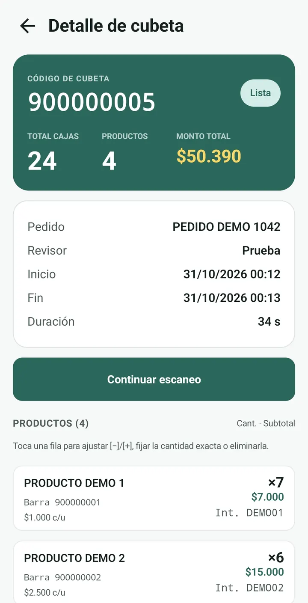
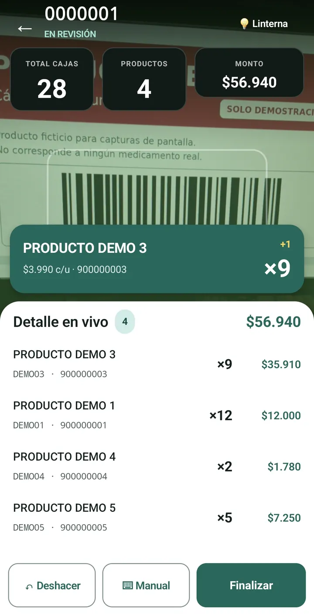
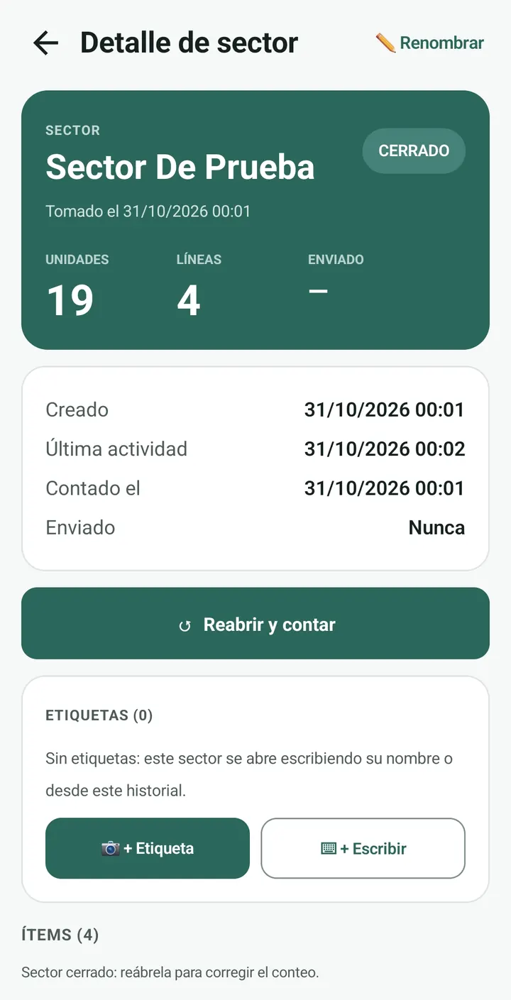
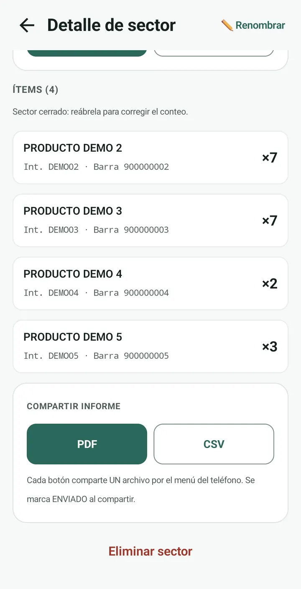
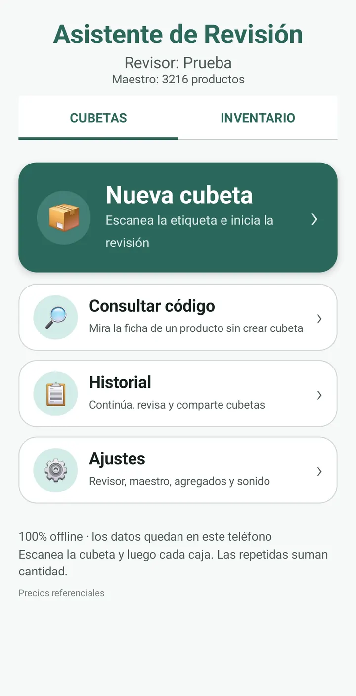
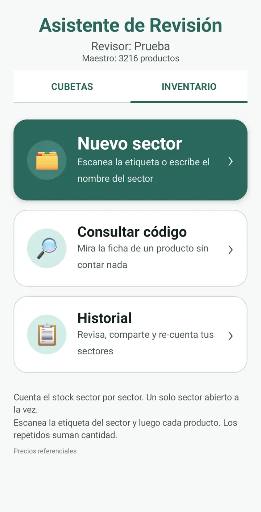
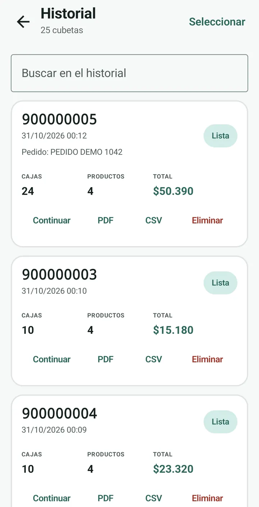
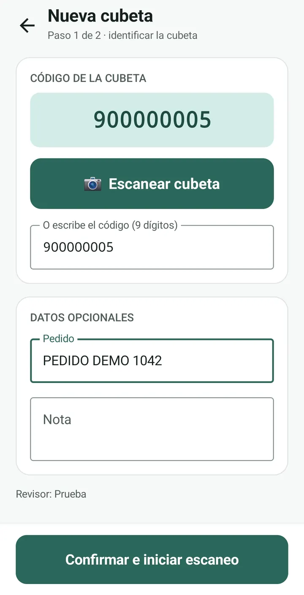
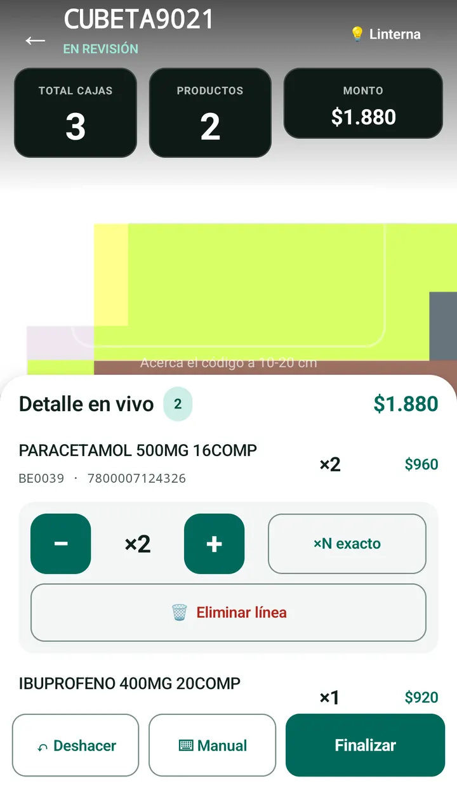
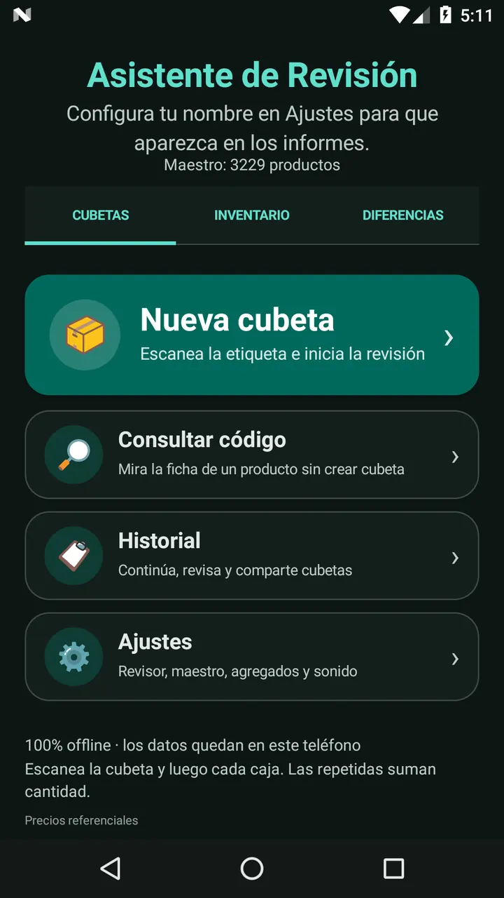
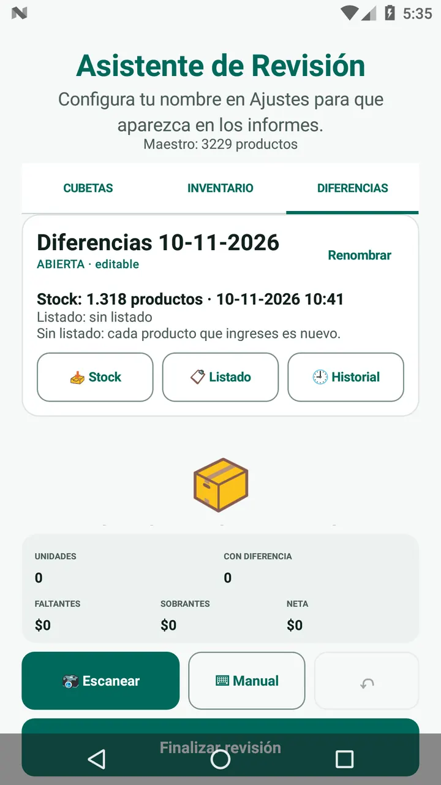
Política de privacidad
Última actualización: 2 de noviembre de 2026.
1. Resumen
Asistente de Revisión es una aplicación para farmacia que funciona 100% sin conexión. No recopila, no transmite y no almacena datos personales en servidores. La información que el usuario registra queda únicamente en el almacenamiento local del teléfono.
La app cubre dos usos: la revisión de recepción de pedidos (cubetas) y el inventario por sectores de sala y bodega (etiquetas, cantidades y montos).
A quién está dirigida: a adultos, en especial dueños de farmacia o franquicia, y a cualquier persona que participe en la recepción de pedidos y en el inventario. También a quienes participan como testers temporales durante la etapa de prueba en Google Play. Cada quien puede adquirirla y usarla en su propio teléfono, sin cuentas ni registros.
2. Datos que trata la aplicación
La app guarda en el propio dispositivo:
- el nombre del revisor que el usuario escriba en Ajustes;
- las cubetas, códigos escaneados, cantidades, fechas y notas de revisión;
- los sectores de inventario, sus etiquetas, cantidades y montos;
- el maestro de productos con el que se identifican los códigos;
- los informes PDF/CSV y los respaldos JSON que el usuario genere.
Estos datos no se envían a servidores del desarrollador ni a terceros. La app no tiene cuentas, inicio de sesión, sincronización, publicidad, analítica ni rastreadores, y no declara permiso de Internet.
La app no interviene con el celular ni con los datos del usuario: no lee ni modifica contactos, mensajes, llamadas, fotos, ubicación, archivos ni aplicaciones del teléfono, salvo los archivos que el propio usuario elige de forma expresa para guardar un informe, un respaldo o importar un CSV.
3. Permisos
- Cámara: solo para leer códigos de barra mientras el usuario
mantiene abierta una pantalla de escaneo. Las imágenes no se guardan ni se
transmiten; el reconocimiento ocurre en el propio dispositivo. La app declara
la cámara como no obligatoria (
required=false). - Vibración: aviso táctil opcional al confirmar una lectura.
- Almacenamiento local / selector de archivos: solo para guardar los informes y respaldos donde el usuario elija, y para importar un respaldo o un CSV que el usuario seleccione expresamente.
4. Compartir informes
Cuando el usuario pulsa Compartir, la app entrega el PDF y/o el CSV al menú nativo de Android para que el usuario elija la aplicación de destino (por ejemplo, WhatsApp o correo). Esa entrega la decide y autoriza el propio usuario. La app no conoce ni controla lo que la aplicación elegida haga después con los archivos.
5. Maestro de productos
El maestro de productos viaja cifrado dentro de la app y es propiedad del desarrollador. Se descifra solo en memoria para identificar los códigos escaneados; el archivo plano nunca se escribe en el teléfono. El maestro no se comparte con terceros.
6. Copias de seguridad del sistema
Si el usuario tiene activada la copia de seguridad de Android, el sistema operativo podría respaldar los datos locales conforme a la configuración de su cuenta. Esa copia es responsabilidad del sistema y no una transmisión realizada por esta aplicación.
7. Eliminación de datos
Por lo anterior, en manos del desarrollador no hay datos personales que solicitar eliminar. La información que el usuario registra vive solo en su teléfono y se borra al desinstalar la app, al limpiar su almacenamiento desde los ajustes de Android o al eliminar cubetas y sectores desde la propia app. Los informes o respaldos que el usuario haya guardado o compartido fuera de la app (por ejemplo, en WhatsApp o en su correo) los administra él mismo.
8. Menores de edad
La app es una herramienta de trabajo para adultos y no está dirigida a menores. No recoge datos de ninguna persona.
9. Cambios
Si esta política cambia, se publicará en esta misma página junto con la fecha de la modificación.
Precio y disponibilidad
Prueba cerrada
La app está en prueba cerrada. Llegará a Google Play pronto.
Pago único. Sin suscripción, sin publicidad.
Precio: disponible pronto. Se verá en la ficha de la app en Google Play.
Android 7.0 (2016) o superior · ~24 MB · sin internet ni permisos de red.
Contacto
Para consultas sobre la app, privacidad o soporte, escribe a:
Asistente de Revisión es un proyecto propietario. El maestro de productos es información comercial confidencial del desarrollador.